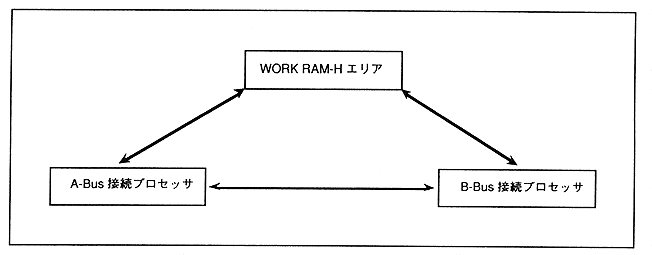
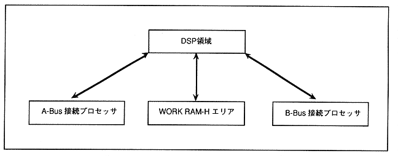

∙ There are two startup methods for SCU DMA transfer control.
-
(1) DMA activation from the main CPU
(2) DMA activation from DSP
Figure 2.2 shows the DMA transferable area when activated from the main CPU, and Figure 2.3 shows the DMA transferable area when activated from the DSP.
Figure 2.2 DMA transfer possible area when started from main CPU

Figure 2.3 DMA transfer available area when started from DSP
